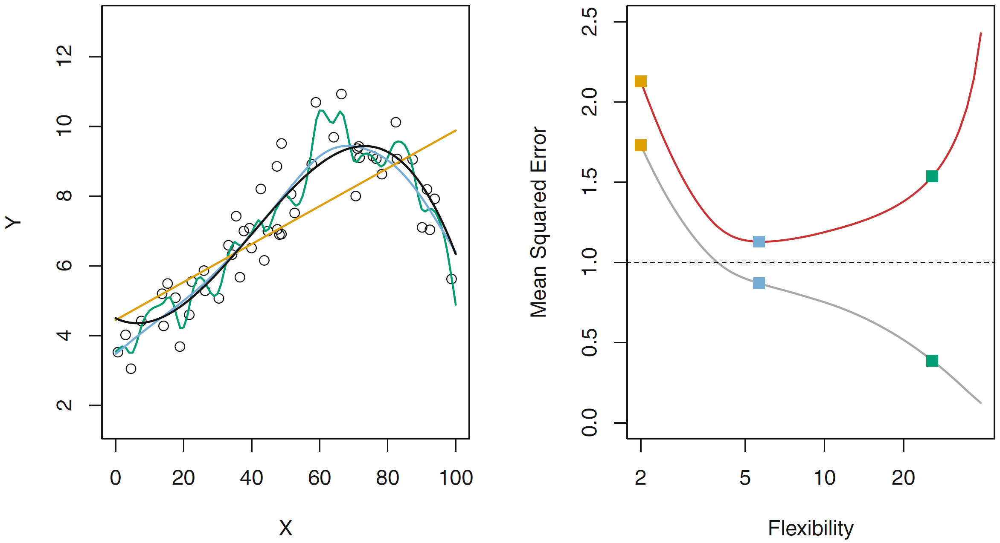
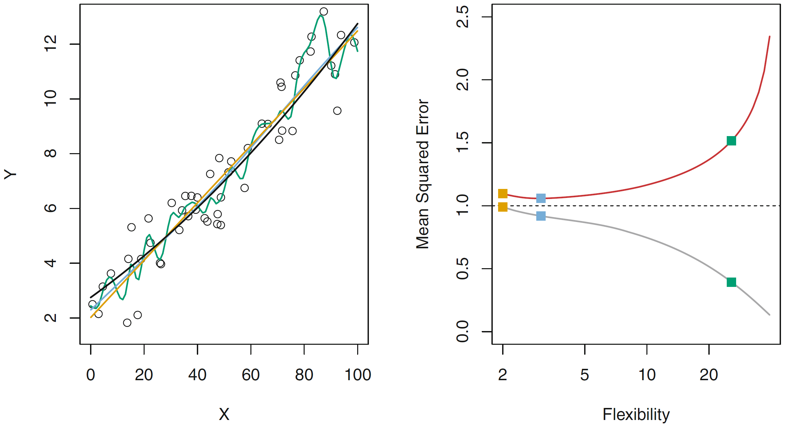
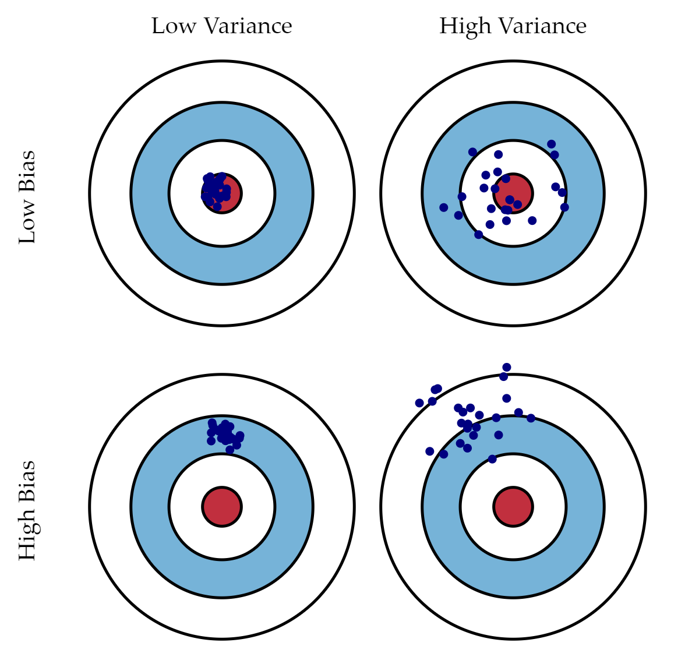

<!DOCTYPE html>
<html lang="es" xml:lang="es">
<head>

  <meta charset="utf-8" />
  <meta http-equiv="X-UA-Compatible" content="IE=edge" />
  <title>Capítulo 3 Conceptos generales | Politica Economica II</title>
  <meta name="description" content="UNLP" />
  <meta name="generator" content="bookdown 0.27 and GitBook 2.6.7" />

  <meta property="og:title" content="Capítulo 3 Conceptos generales | Politica Economica II" />
  <meta property="og:type" content="book" />
  
  <meta property="og:description" content="UNLP" />
  <meta name="github-repo" content="msangia/msangia.github" />

  <meta name="twitter:card" content="summary" />
  <meta name="twitter:title" content="Capítulo 3 Conceptos generales | Politica Economica II" />
  <meta name="twitter:site" content="@msangia" />
  <meta name="twitter:description" content="UNLP" />
  

<meta name="author" content="Máximo Sangiácomo" />


  <meta name="viewport" content="width=device-width, initial-scale=1" />
  <meta name="apple-mobile-web-app-capable" content="yes" />
  <meta name="apple-mobile-web-app-status-bar-style" content="black" />
  
  
<link rel="prev" href="bd.html"/>
<link rel="next" href="arboles.html"/>
<script src="libs/jquery-3.6.0/jquery-3.6.0.min.js"></script>
<script src="https://cdn.jsdelivr.net/npm/fuse.js@6.4.6/dist/fuse.min.js"></script>
<link href="libs/gitbook-2.6.7/css/style.css" rel="stylesheet" />
<link href="libs/gitbook-2.6.7/css/plugin-table.css" rel="stylesheet" />
<link href="libs/gitbook-2.6.7/css/plugin-bookdown.css" rel="stylesheet" />
<link href="libs/gitbook-2.6.7/css/plugin-highlight.css" rel="stylesheet" />
<link href="libs/gitbook-2.6.7/css/plugin-search.css" rel="stylesheet" />
<link href="libs/gitbook-2.6.7/css/plugin-fontsettings.css" rel="stylesheet" />
<link href="libs/gitbook-2.6.7/css/plugin-clipboard.css" rel="stylesheet" />


<link href="libs/anchor-sections-1.1.0/anchor-sections.css" rel="stylesheet" />
<link href="libs/anchor-sections-1.1.0/anchor-sections-hash.css" rel="stylesheet" />
<script src="libs/anchor-sections-1.1.0/anchor-sections.js"></script>
<html>
  <head>
	<link rel="shortcut icon" href="images/favicon.png" />
  </head>
  <body>
  </body>
</html>


<style type="text/css">
pre > code.sourceCode { white-space: pre; position: relative; }
pre > code.sourceCode > span { display: inline-block; line-height: 1.25; }
pre > code.sourceCode > span:empty { height: 1.2em; }
.sourceCode { overflow: visible; }
code.sourceCode > span { color: inherit; text-decoration: inherit; }
pre.sourceCode { margin: 0; }
@media screen {
div.sourceCode { overflow: auto; }
}
@media print {
pre > code.sourceCode { white-space: pre-wrap; }
pre > code.sourceCode > span { text-indent: -5em; padding-left: 5em; }
}
pre.numberSource code
  { counter-reset: source-line 0; }
pre.numberSource code > span
  { position: relative; left: -4em; counter-increment: source-line; }
pre.numberSource code > span > a:first-child::before
  { content: counter(source-line);
    position: relative; left: -1em; text-align: right; vertical-align: baseline;
    border: none; display: inline-block;
    -webkit-touch-callout: none; -webkit-user-select: none;
    -khtml-user-select: none; -moz-user-select: none;
    -ms-user-select: none; user-select: none;
    padding: 0 4px; width: 4em;
    color: #aaaaaa;
  }
pre.numberSource { margin-left: 3em; border-left: 1px solid #aaaaaa;  padding-left: 4px; }
div.sourceCode
  {   }
@media screen {
pre > code.sourceCode > span > a:first-child::before { text-decoration: underline; }
}
code span.al { color: #ff0000; font-weight: bold; } /* Alert */
code span.an { color: #60a0b0; font-weight: bold; font-style: italic; } /* Annotation */
code span.at { color: #7d9029; } /* Attribute */
code span.bn { color: #40a070; } /* BaseN */
code span.bu { } /* BuiltIn */
code span.cf { color: #007020; font-weight: bold; } /* ControlFlow */
code span.ch { color: #4070a0; } /* Char */
code span.cn { color: #880000; } /* Constant */
code span.co { color: #60a0b0; font-style: italic; } /* Comment */
code span.cv { color: #60a0b0; font-weight: bold; font-style: italic; } /* CommentVar */
code span.do { color: #ba2121; font-style: italic; } /* Documentation */
code span.dt { color: #902000; } /* DataType */
code span.dv { color: #40a070; } /* DecVal */
code span.er { color: #ff0000; font-weight: bold; } /* Error */
code span.ex { } /* Extension */
code span.fl { color: #40a070; } /* Float */
code span.fu { color: #06287e; } /* Function */
code span.im { } /* Import */
code span.in { color: #60a0b0; font-weight: bold; font-style: italic; } /* Information */
code span.kw { color: #007020; font-weight: bold; } /* Keyword */
code span.op { color: #666666; } /* Operator */
code span.ot { color: #007020; } /* Other */
code span.pp { color: #bc7a00; } /* Preprocessor */
code span.sc { color: #4070a0; } /* SpecialChar */
code span.ss { color: #bb6688; } /* SpecialString */
code span.st { color: #4070a0; } /* String */
code span.va { color: #19177c; } /* Variable */
code span.vs { color: #4070a0; } /* VerbatimString */
code span.wa { color: #60a0b0; font-weight: bold; font-style: italic; } /* Warning */
</style>

<style type="text/css">
/* Used with Pandoc 2.11+ new --citeproc when CSL is used */
div.csl-bib-body { }
div.csl-entry {
  clear: both;
}
.hanging div.csl-entry {
  margin-left:2em;
  text-indent:-2em;
}
div.csl-left-margin {
  min-width:2em;
  float:left;
}
div.csl-right-inline {
  margin-left:2em;
  padding-left:1em;
}
div.csl-indent {
  margin-left: 2em;
}
</style>

<link rel="stylesheet" href="css/style.css" type="text/css" />
<link rel="stylesheet" href="css/r4ds.css" type="text/css" />
</head>

<body>


  <div class="book without-animation with-summary font-size-2 font-family-1" data-basepath=".">

    <div class="book-summary">
      <nav role="navigation">

<ul class="summary">
<li><a href="./">Politica Economica II - UNLP</a></li>

<li class="divider"></li>
<li class="chapter" data-level="" data-path="index.html"><a href="index.html"><i class="fa fa-check"></i>Descripcion del curso</a></li>
<li class="chapter" data-level="1" data-path="intro.html"><a href="intro.html"><i class="fa fa-check"></i><b>1</b> Introduccion a R</a>
<ul>
<li class="chapter" data-level="1.1" data-path="intro.html"><a href="intro.html#primeros-pasos"><i class="fa fa-check"></i><b>1.1</b> Primeros pasos</a></li>
<li class="chapter" data-level="1.2" data-path="intro.html"><a href="intro.html#busacar-ayuda"><i class="fa fa-check"></i><b>1.2</b> Busacar ayuda</a></li>
<li class="chapter" data-level="1.3" data-path="intro.html"><a href="intro.html#tipos-de-datos"><i class="fa fa-check"></i><b>1.3</b> Tipos de datos</a></li>
<li class="chapter" data-level="1.4" data-path="intro.html"><a href="intro.html#limpieza-de-memoria"><i class="fa fa-check"></i><b>1.4</b> Limpieza de memoria</a></li>
<li class="chapter" data-level="1.5" data-path="intro.html"><a href="intro.html#asignación-de-valores"><i class="fa fa-check"></i><b>1.5</b> Asignación de valores</a></li>
<li class="chapter" data-level="1.6" data-path="intro.html"><a href="intro.html#operadores-aritméticos"><i class="fa fa-check"></i><b>1.6</b> Operadores aritméticos</a></li>
<li class="chapter" data-level="1.7" data-path="intro.html"><a href="intro.html#operadores-relacionales"><i class="fa fa-check"></i><b>1.7</b> Operadores relacionales</a></li>
<li class="chapter" data-level="1.8" data-path="intro.html"><a href="intro.html#operadores-lógicos"><i class="fa fa-check"></i><b>1.8</b> Operadores lógicos</a></li>
</ul></li>
<li class="chapter" data-level="2" data-path="bd.html"><a href="bd.html"><i class="fa fa-check"></i><b>2</b> Base de datos</a>
<ul>
<li class="chapter" data-level="2.1" data-path="bd.html"><a href="bd.html#directorio-de-trabajo"><i class="fa fa-check"></i><b>2.1</b> Directorio de trabajo</a></li>
<li class="chapter" data-level="2.2" data-path="bd.html"><a href="bd.html#cargar-datos"><i class="fa fa-check"></i><b>2.2</b> Cargar datos</a>
<ul>
<li class="chapter" data-level="2.2.1" data-path="bd.html"><a href="bd.html#ingrasar-datos-con-tidyverse"><i class="fa fa-check"></i><b>2.2.1</b> Ingrasar datos con <code>tidyverse</code></a></li>
</ul></li>
<li class="chapter" data-level="2.3" data-path="bd.html"><a href="bd.html#exportar-datos"><i class="fa fa-check"></i><b>2.3</b> Exportar datos</a></li>
<li class="chapter" data-level="2.4" data-path="bd.html"><a href="bd.html#variables"><i class="fa fa-check"></i><b>2.4</b> Variables</a></li>
<li class="chapter" data-level="2.5" data-path="bd.html"><a href="bd.html#merge"><i class="fa fa-check"></i><b>2.5</b> Merge</a></li>
<li class="chapter" data-level="2.6" data-path="bd.html"><a href="bd.html#variables-group_by-mutate"><i class="fa fa-check"></i><b>2.6</b> Variables: group_by, mutate</a></li>
<li class="chapter" data-level="2.7" data-path="bd.html"><a href="bd.html#guardar-datos"><i class="fa fa-check"></i><b>2.7</b> Guardar datos</a></li>
<li class="chapter" data-level="2.8" data-path="bd.html"><a href="bd.html#valores-missing"><i class="fa fa-check"></i><b>2.8</b> Valores missing</a></li>
<li class="chapter" data-level="2.9" data-path="bd.html"><a href="bd.html#análisis-de-datos"><i class="fa fa-check"></i><b>2.9</b> Análisis de datos</a>
<ul>
<li class="chapter" data-level="2.9.1" data-path="bd.html"><a href="bd.html#tablas"><i class="fa fa-check"></i><b>2.9.1</b> Tablas</a></li>
</ul></li>
<li class="chapter" data-level="2.10" data-path="bd.html"><a href="bd.html#group_by-summarise"><i class="fa fa-check"></i><b>2.10</b> group_by, summarise</a></li>
<li class="chapter" data-level="2.11" data-path="bd.html"><a href="bd.html#gráficos"><i class="fa fa-check"></i><b>2.11</b> Gráficos</a></li>
<li class="chapter" data-level="2.12" data-path="bd.html"><a href="bd.html#ggplot"><i class="fa fa-check"></i><b>2.12</b> GGPlot</a></li>
<li class="chapter" data-level="2.13" data-path="bd.html"><a href="bd.html#guardar-un-gráfico"><i class="fa fa-check"></i><b>2.13</b> Guardar un gráfico</a></li>
</ul></li>
<li class="chapter" data-level="3" data-path="conceptos.html"><a href="conceptos.html"><i class="fa fa-check"></i><b>3</b> Conceptos generales</a>
<ul>
<li class="chapter" data-level="3.1" data-path="conceptos.html"><a href="conceptos.html#estimacion"><i class="fa fa-check"></i><b>3.1</b> Estimacion</a></li>
<li class="chapter" data-level="3.2" data-path="conceptos.html"><a href="conceptos.html#prediccion"><i class="fa fa-check"></i><b>3.2</b> Prediccion</a></li>
<li class="chapter" data-level="3.3" data-path="conceptos.html"><a href="conceptos.html#metodos-parametricos"><i class="fa fa-check"></i><b>3.3</b> Metodos parametricos</a></li>
<li class="chapter" data-level="3.4" data-path="conceptos.html"><a href="conceptos.html#metodos-no-parametricos"><i class="fa fa-check"></i><b>3.4</b> Metodos no parametricos</a></li>
<li class="chapter" data-level="3.5" data-path="conceptos.html"><a href="conceptos.html#evaluacion-de-la-precision-del-modelo"><i class="fa fa-check"></i><b>3.5</b> Evaluacion de la precision del modelo</a>
<ul>
<li class="chapter" data-level="3.5.1" data-path="conceptos.html"><a href="conceptos.html#ajuste"><i class="fa fa-check"></i><b>3.5.1</b> Calidad del ajuste</a></li>
<li class="chapter" data-level="3.5.2" data-path="conceptos.html"><a href="conceptos.html#trade-off-sesgo-varianza"><i class="fa fa-check"></i><b>3.5.2</b> Trade-off Sesgo-Varianza</a></li>
<li class="chapter" data-level="3.5.3" data-path="conceptos.html"><a href="conceptos.html#clasificacion"><i class="fa fa-check"></i><b>3.5.3</b> Clasificacion</a></li>
<li class="chapter" data-level="3.5.4" data-path="conceptos.html"><a href="conceptos.html#confusion"><i class="fa fa-check"></i><b>3.5.4</b> Matriz de confusion</a></li>
</ul></li>
</ul></li>
<li class="chapter" data-level="4" data-path="arboles.html"><a href="arboles.html"><i class="fa fa-check"></i><b>4</b> Arboles de decision</a>
<ul>
<li class="chapter" data-level="4.1" data-path="arboles.html"><a href="arboles.html#classification-and-regression-tree-cart"><i class="fa fa-check"></i><b>4.1</b> <em>Classification and Regression Tree</em> (CART)</a></li>
<li class="chapter" data-level="4.2" data-path="arboles.html"><a href="arboles.html#bagging"><i class="fa fa-check"></i><b>4.2</b> Bagging</a></li>
<li class="chapter" data-level="4.3" data-path="arboles.html"><a href="arboles.html#random-forest"><i class="fa fa-check"></i><b>4.3</b> Random Forest</a></li>
</ul></li>
<li class="chapter" data-level="5" data-path="score.html"><a href="score.html"><i class="fa fa-check"></i><b>5</b> Trabajo Practico</a>
<ul>
<li class="chapter" data-level="5.1" data-path="score.html"><a href="score.html#reglas-del-trabajo-practico"><i class="fa fa-check"></i><b>5.1</b> Reglas del Trabajo practico</a></li>
<li class="chapter" data-level="5.2" data-path="score.html"><a href="score.html#enunciado-del-trabajo-practico"><i class="fa fa-check"></i><b>5.2</b> Enunciado del Trabajo Practico</a></li>
<li class="chapter" data-level="5.3" data-path="score.html"><a href="score.html#aplicacion-practica"><i class="fa fa-check"></i><b>5.3</b> Aplicacion practica</a></li>
</ul></li>
<li class="chapter" data-level="" data-path="bibliografia.html"><a href="bibliografia.html"><i class="fa fa-check"></i>Bibliografia</a></li>
<li class="divider"></li>
<li><a href="./" target="blank">Maximo Sangiacomo</a></li>

</ul>

      </nav>
    </div>

    <div class="book-body">
      <div class="body-inner">
        <div class="book-header" role="navigation">
          <h1>
            <i class="fa fa-circle-o-notch fa-spin"></i><a href="./">Politica Economica II</a>
          </h1>
        </div>

        <div class="page-wrapper" tabindex="-1" role="main">
          <div class="page-inner">

            <section class="normal" id="section-">
<link href="css/style.css" rel="stylesheet">
<div class="hero-image-container"> 
  
</div>
<div id="conceptos" class="section level1 hasAnchor" number="3">
<h1><span class="header-section-number">Capítulo 3</span> Conceptos generales<a href="conceptos.html#conceptos" class="anchor-section" aria-label="Anchor link to header"></a></h1>
<div id="estimacion" class="section level2 hasAnchor" number="3.1">
<h2><span class="header-section-number">3.1</span> Estimacion<a href="conceptos.html#estimacion" class="anchor-section" aria-label="Anchor link to header"></a></h2>
<p>Supongamos que se quiere estudiar la relación entre el gasto en publicidad a través de diversos canales como televisión, radio, diarios (<em>inputs</em>) y las ventas en distintos mercados (<em>output</em>).</p>
<p><span class="math display" id="eq:estima">\[\begin{equation}
\tag{3.1}
  Y = f(X) + \epsilon
\end{equation}\]</span></p>
<p>donde <span class="math inline">\(f\)</span> es una función desconocida de <span class="math inline">\((X_1, X_2, X_3)\)</span> y <span class="math inline">\(\epsilon\)</span> es un término de error aleatorio independiente de <span class="math inline">\(X\)</span> con media igual a <span class="math inline">\(0\)</span>.</p>
<p>En esencia, el aprendizaje estadístico se refiere a un conjunto de enfoques para estimar <span class="math inline">\(f\)</span>.</p>
</div>
<div id="prediccion" class="section level2 hasAnchor" number="3.2">
<h2><span class="header-section-number">3.2</span> Prediccion<a href="conceptos.html#prediccion" class="anchor-section" aria-label="Anchor link to header"></a></h2>
<p>Supongamos que se dispone de datos de variables independientes por no de la dependiente, en ese caso, dado que el error en promedio es <span class="math inline">\(0\)</span> podríamos predecir <span class="math inline">\(Y\)</span> utilizando:</p>
<p><span class="math display" id="eq:pred">\[\begin{equation}
\tag{3.2}
  \hat{Y} = \hat{f}(X)
\end{equation}\]</span></p>
<p>donde <span class="math inline">\(\hat{f}\)</span> representa nuestra estimación de <span class="math inline">\(f\)</span> y <span class="math inline">\(\hat{Y}\)</span> representa la predicción de <span class="math inline">\(Y\)</span>. En este contexto, <span class="math inline">\(\hat{f}\)</span> a menudo se trata como una <strong>caja negra</strong>, en el sentido que no importa la forma exacta de <span class="math inline">\(\hat{f}\)</span>, siempre que produzca predicciones precisas de <span class="math inline">\(Y\)</span>.</p>
<p>La precisión con la que <span class="math inline">\(\hat{Y}\)</span> se acerca a <span class="math inline">\(Y\)</span> depende de dos cantidades, el error <em>reducible</em> y el <em>irreducible</em>. En general, <span class="math inline">\(\hat{f}\)</span> no será una estimación perfecta de <span class="math inline">\(f\)</span>, y esta inexactitud introducirá un error que es reducible porque potencialmente podemos mejorar la precisión de <span class="math inline">\(\hat{f}\)</span> usando la técnica de aprendizaje estadístico más apropiada para estimar <span class="math inline">\(f\)</span>. Sin embargo, si fuera posible estimar <span class="math inline">\(f\)</span> exactamente de manera que la respuesta estimada <span class="math inline">\(\hat{Y} = f(X)\)</span>, nuestra predicción todavía tendría algún error dado que <span class="math inline">\(Y\)</span> también es función de <span class="math inline">\(\epsilon\)</span>, que por definición, no se puede predecir usando <span class="math inline">\(X\)</span>. Por lo tanto, la variabilidad asociada con <span class="math inline">\(\epsilon\)</span> también afecta la precisión de nuestras predicciones. Esto se conoce como el error irreducible, porque no importa qué tan bien estimemos <span class="math inline">\(f\)</span>, no puede reducir el error introducido por <span class="math inline">\(\epsilon\)</span>.</p>
<p>El término de error <span class="math inline">\(\epsilon\)</span> puede contener variables no observables que son útiles para predecir <span class="math inline">\(Y\)</span> y, por lo tanto, <span class="math inline">\(f\)</span> no puede usarlos para su predicción.</p>
<p><span class="math display" id="eq:ri">\[\begin{align}
\tag{3.3}
  E(Y - \hat{Y})^2 &amp; = E[f(X) + \epsilon - \hat{f}(X)]^2 \\
                   &amp; = \underbrace{[f(X) - \hat{f}(X)]^2}_{\text{Reducible}} + \underbrace{Var(\epsilon)}_{\text{Irreducible}}
\end{align}\]</span></p>
<p>donde de <span class="math inline">\(E(Y − \hat{Y})^2\)</span> representa el promedio, o valor esperado, de la diferencia entre el valor predicho y el valor real de <span class="math inline">\(Y\)</span> elevado al cuadrado (diferencia por exceso y defecto ponderan igual), y <span class="math inline">\(Var(\epsilon)\)</span> representa la varianza asociada al término de error <span class="math inline">\(\epsilon\)</span>.</p>
<p>El <strong>foco</strong> está en las técnicas para estimar <span class="math inline">\(f\)</span> con el objetivo de minimizar el error reducible. Es importante tener en cuenta que la error irreducible siempre proporcionará un límite superior en la precisión de nuestra predicción para <span class="math inline">\(Y\)</span> que en la práctica casi siempre es desconocido.</p>
</div>
<div id="metodos-parametricos" class="section level2 hasAnchor" number="3.3">
<h2><span class="header-section-number">3.3</span> Metodos parametricos<a href="conceptos.html#metodos-parametricos" class="anchor-section" aria-label="Anchor link to header"></a></h2>
<p>Se realiza en dos etapas:</p>
<ul>
<li>Asumir una forma funcional (<strong>modelo</strong>, por ejemplo lineal)</li>
</ul>
<p><span class="math display" id="eq:ml">\[\begin{equation}
\tag{3.4}
  Y = \beta_0 + \beta_1 X_1 + \beta_2 X_2 + ... + \beta_p X_p
\end{equation}\]</span></p>
<ul>
<li>Estimar los parámetros (<strong>método</strong>, por ejemplo Mínimos Cuadrados Ordinarios -MCO-)</li>
</ul>
<p>Si bien el problema se reduce a estimar <span class="math inline">\(p + 1\)</span> parámetros, la desventaja es que la forma funcional elegida puede diferir de la verdadera <span class="math inline">\(f\)</span>.</p>
</div>
<div id="metodos-no-parametricos" class="section level2 hasAnchor" number="3.4">
<h2><span class="header-section-number">3.4</span> Metodos no parametricos<a href="conceptos.html#metodos-no-parametricos" class="anchor-section" aria-label="Anchor link to header"></a></h2>
<p>No realizan supuestos sobre la forma funcional de <span class="math inline">\(f\)</span> sino que tratan de buscar una estimación que se acerque lo más posible a los datos sin ser ni demasiado tosco ni demasiado ondulado.</p>
<p>Este enfoque puede tener una gran ventaja sobre los métodos paramétricos: al evitar el supuesto de una forma funcional particular para <em>f</em>, tiene el potencial para adaptarse con precisión a una gama más amplia de posibles formas para <em>f</em>. Cualquier enfoque paramétrico tiene la posibilidad de que la forma funcional utilizada para estimar <em>f</em> sea muy diferente de la verdadera <em>f</em>, en cuyo caso el resultado modelo no se ajustará bien a los datos. El costo es que se necesitan más datos para estimar.</p>
</div>
<div id="evaluacion-de-la-precision-del-modelo" class="section level2 hasAnchor" number="3.5">
<h2><span class="header-section-number">3.5</span> Evaluacion de la precision del modelo<a href="conceptos.html#evaluacion-de-la-precision-del-modelo" class="anchor-section" aria-label="Anchor link to header"></a></h2>
<p>Ningún método domina al resto sobre todas las bases de datos posibles. En un <em>set</em> de datos en particular, un método específico puede funcionar mejor, pero algún otro método lo puede superar con otra base de datos. Por lo tanto, en cada caso se debe decidir qué método produce los mejores resultados.</p>
<div id="ajuste" class="section level3 hasAnchor" number="3.5.1">
<h3><span class="header-section-number">3.5.1</span> Calidad del ajuste<a href="conceptos.html#ajuste" class="anchor-section" aria-label="Anchor link to header"></a></h3>
<p>Para evaluar el desempeño de un método de aprendizaje estadístico en una base de datos dada, se necesita alguna forma de medir qué tan bien sus predicciones coinciden con los datos observados. Es decir, se necesita cuantificar el grado en el cual el valor pronosticado para una observación dada está cerca de el verdadero valor de respuesta para esa observación. En el escenario de regresión, la medida más utilizada es el error medio cuadrático (<span class="math inline">\(EMC\)</span>):</p>
<p><span class="math display" id="eq:mse">\[\begin{equation}
\tag{3.5}
  EMC = \frac{1}{n} \sum_{i=1}^{n}(y_i - \hat{f}(x_i))^2
\end{equation}\]</span></p>
<p>donde <span class="math inline">\(\hat{f}(x_i)\)</span> es la predicción que hace <span class="math inline">\(\hat{f}\)</span> sobre la observación <span class="math inline">\(i\)</span>. El <span class="math inline">\(EMC\)</span> será pequeño si las respuestas predichas están muy cerca de las respuestas verdaderas y será grande si para algunas observaciones difieren demasiado.</p>
<p>El <span class="math inline">\(EMC\)</span> en <a href="conceptos.html#eq:mse">(3.5)</a> se calcula usando los <strong>datos de entrenamiento</strong> (<em>training</em>) que se usaron para estimar el modelo, por lo que debería denominarse con mayor precisión <span class="math inline">\(EMC\)</span> de entrenamiento. Pero en general, no nos interesa realmente qué tan bien funciona el método
sobre los datos de entrenamiento. Más bien, estamos interesados en la precisión de las predicciones que obtenemos cuando aplicamos nuestro método <strong>datos de <em>test</em></strong> que no fueron visto antes (datos no utilizados para entrenar el modelo). Es decir, se busca elegir el método que produzca el menor <span class="math inline">\(EMC\)</span> de <em>test</em>.</p>
<p><span class="math display" id="eq:msetest">\[\begin{equation}
\tag{3.6}
  Prom(y_0 - \hat{f}(x_0))^2
\end{equation}\]</span></p>
<p>el error de predicción cuadrático promedio para estas observaciones de <em>test</em> <span class="math inline">\((y_0, x_0)\)</span>.</p>
<p>¿Qué sucede si se elige en base al <span class="math inline">\(EMC\)</span> de <em>training</em> <a href="conceptos.html#eq:mse">(3.5)</a>? No hay garantía de que el método con el <span class="math inline">\(EMC\)</span> de entrenamiento más bajo también tenga el <span class="math inline">\(EMC\)</span> de <em>test</em> más bajo.</p>
<p>El panel de la izquierda de la Figura <a href="conceptos.html#fig:f29">3.1</a> muestra la verdadera <span class="math inline">\(f\)</span> dada por la curva negra. Las curvas naranja, azul y verde ilustran
tres posibles estimaciones de <span class="math inline">\(f\)</span> obtenidas utilizando métodos con distintos niveles de flexibilidad. La línea naranja es el ajuste de regresión lineal, que es relativamente inflexible. Las curvas azul y verde se produjeron usando <em>splines</em> con diferentes niveles de suavidad. Es claro que a medida que aumenta el nivel de flexibilidad, las curvas se ajustan mejor a los datos observados. La curva verde es la más flexible y coincide muy bien con los datos; sin embargo, se observa que se ajusta mal a la verdadera <span class="math inline">\(f\)</span> (en negro) porque es demasiado ondulada. Cambiando el nivel de flexibilidad del <em>spline</em> se pueden producir ajustes diferentes para estos datos.</p>
<p>En el panel de la derecha de la Figura <a href="conceptos.html#fig:f29">3.1</a> la curva <strong>gris</strong>
muestra el <span class="math inline">\(EMC\)</span> de <strong>entrenamiento</strong> promedio en función de la flexibilidad, o más formalmente los grados de libertad (resume la flexibilidad de una curva), para una serie de <em>splines</em>. Los cuadrados naranja, azul y verde indican los <span class="math inline">\(EMC\)</span> asociados con las curvas correspondientes en el panel izquierdo. El <span class="math inline">\(EMC\)</span> de entrenamiento disminuye monótonamente a medida que aumenta la flexibilidad. Dado que la verdadera <span class="math inline">\(f\)</span> es no lineal, el ajuste lineal naranja no es lo suficientemente flexible para estimar bien <span class="math inline">\(f\)</span>. La curva verde tiene el <span class="math inline">\(EMC\)</span> de entrenamiento más bajo de los tres métodos, ya que corresponde a la más flexible de las tres curvas.</p>
<p>En este ejemplo, se conoce la verdadera función <span class="math inline">\(f\)</span>, por lo que también se puede calcular el <span class="math inline">\(EMC\)</span> de <em>test</em> (en general <span class="math inline">\(f\)</span> es desconocida, por lo que esto no es posible). El <span class="math inline">\(EMC\)</span> de <strong><em>test</em></strong> se muestra usando la curva <strong>roja</strong> en el panel derecho de la Figura <a href="conceptos.html#fig:f29">3.1</a>. Como con el <span class="math inline">\(EMC\)</span> de entrenamiento, el <span class="math inline">\(EMC\)</span> de <em>test</em> disminuye inicialmente a medida que el nivel de flexibilidad aumenta. Sin embargo, en algún momento el <span class="math inline">\(EMC\)</span> de <em>test</em> se nivela y luego empieza a aumentar. En consecuencia, las curvas naranja y verde tienen un <span class="math inline">\(EMC\)</span> de <em>test</em> alto. La curva azul minimiza el <span class="math inline">\(EMC\)</span> de <em>test</em>, dado que visualmente parece estimar mejor <span class="math inline">\(f\)</span> en el panel izquierdo. La línea discontinua horizontal indica <span class="math inline">\(Var(\epsilon)\)</span>, el error irreducible en la ecuación de <span class="math inline">\(E(Y - \hat{Y})^2\)</span>, que corresponde al menor alcanzable por el <span class="math inline">\(EMC\)</span> de <em>test</em> entre todos los métodos posibles. Por lo tanto, el suavizado de <em>spline</em> representado por la curva azul está cerca del óptimo.</p>
<div class="infobox important">
<p>En el panel de la derecha de la Figura <a href="conceptos.html#fig:f29">3.1</a>, a medida que la flexibilidad del método de aprendizaje aumenta, se observa una disminución monótona en el <span class="math inline">\(EMC\)</span> de entrenamiento y una forma de U en el <span class="math inline">\(EMC\)</span> de <em>test</em>. Esta es una propiedad fundamental de aprendizaje estadístico que se mantiene independientemente de la base de datos particular en cuestión e independientemente del método estadístico que se utilice.</p>
</div>
<p>Cuando un método dado produce un <span class="math inline">\(EMC\)</span> de entrenamiento pequeño pero un <span class="math inline">\(EMC\)</span> de <em>test</em> grande, se dice que está haciendo <em>overfitting</em>/sobreajustando los datos. Esto sucede porque nuestro aprendizaje estadístico está trabajando demasiado para encontrar patrones en los datos de entrenamiento, y puede estar detectando algunos patrones que son causados por casualidad en lugar de por las verdaderas propiedades de la función desconocida <span class="math inline">\(f\)</span>. <strong><em>Overfitting</em></strong> se refiere específicamente al caso en el que un modelo menos flexible podría haber producido un menor error de predicción en <em>test</em>.</p>
<div class="figure" style="text-align: center"><span style="display:block;" id="fig:f29"></span>

<p class="caption">
Figura 3.1: Datos en curva y ECM
</p>
</div>
<p>La Figura <a href="conceptos.html#fig:f210">3.2</a> proporciona otro ejemplo en el que la verdadera <span class="math inline">\(f\)</span> es aproximadamente lineal por lo que este tipo de modelos obtienen el menor <span class="math inline">\(EMC\)</span> en <em>test</em> (curva roja en el panel derecho de la Figura <a href="conceptos.html#fig:f210">3.2</a>).</p>
<div class="figure" style="text-align: center"><span style="display:block;" id="fig:f210"></span>

<p class="caption">
Figura 3.2: Datos lineales y EMC
</p>
</div>
</div>
<div id="trade-off-sesgo-varianza" class="section level3 hasAnchor" number="3.5.2">
<h3><span class="header-section-number">3.5.2</span> Trade-off Sesgo-Varianza<a href="conceptos.html#trade-off-sesgo-varianza" class="anchor-section" aria-label="Anchor link to header"></a></h3>
<p>La Figura <a href="conceptos.html#fig:fsv">3.3</a> muestra el <em>trade-off</em> <strong>Sesgo - Varianza</strong> intuitivamente.</p>
<div class="figure" style="text-align: center"><span style="display:block;" id="fig:fsv"></span>

<p class="caption">
Figura 3.3: Estimacion y EMC
</p>
</div>
<p>Fuente: <a href="http://scott.fortmann-roe.com/docs/BiasVariance.html">Scott Fortmann-Roe</a></p>
<p>La forma de U observada en las curvas <span class="math inline">\(EMC\)</span> de <em>test</em> es el resultado de dos propiedades que compiten en los métodos de aprendizaje estadístico. El <span class="math inline">\(EMC\)</span> de <em>test</em> esperado, para un valor dado <span class="math inline">\(x_0\)</span>, puede descomponerse en la suma de tres cantidades fundamentales: la
varianza de <span class="math inline">\(\hat{f}(x_0)\)</span>, el sesgo al cuadrado de <span class="math inline">\(\hat{f}(x_0)\)</span> y la varianza del error <span class="math inline">\(\epsilon\)</span>.</p>
<p><span class="math display" id="eq:sv">\[\begin{equation}
\tag{3.7}
  E(y_0 - \hat{f}(x_0))^2 = Var(\hat{f}(x_0)) + [Sesgo(\hat{f}(x_0))]^2 + Var(\epsilon)
\end{equation}\]</span></p>
<p>donde <span class="math inline">\(E(y_0 - \hat{f}(x_0))^2\)</span> el valor esperado de <span class="math inline">\(EMC\)</span> de <em>test</em> en <span class="math inline">\(x_0\)</span>. Para minimizar el error de <em>test</em> esperado, se necesita seleccionar un método de aprendizaje estadístico que logre simultáneamente <strong>baja varianza</strong> y <strong>bajo sesgo</strong>.</p>
<p>La <strong>varianza</strong> se refiere al valor en que <span class="math inline">\(f\)</span> cambiaría si
se estimara utilizando una base de datos de entrenamiento diferente. <strong>Sesgo</strong> se refiere al error que se introduce al aproximar un problema de la vida real, que puede ser extremadamente complicado, por mucho modelo más simple. Como regla general, a medida que se utilizan métodos más flexibles, la varianza aumenta y el sesgo disminuye. La tasa relativa de cambio de estas dos cantidades determina si el <span class="math inline">\(EMC\)</span> de <em>test</em> aumenta o disminuye.</p>
<p>Los dos paneles de la Figura <a href="conceptos.html#fig:f212">3.4</a> ilustran la Ecuación <a href="conceptos.html#eq:sv">(3.7)</a> para los ejemplos en Figuras <a href="conceptos.html#fig:f29">3.1</a> y <a href="conceptos.html#fig:f210">3.2</a>. En cada caso, la curva sólida azul representa el cuadrado del sesgo, para diferentes niveles de flexibilidad, mientras que la curva naranja corresponde a la varianza. La línea discontinua horizontal representa <span class="math inline">\(Var(\epsilon)\)</span>, el error irreducible. Finalmente, la curva roja, corresponde al <span class="math inline">\(EMC\)</span> de <em>test</em>, es la suma de estas tres cantidades.</p>
<div class="figure" style="text-align: center"><span style="display:block;" id="fig:f212"></span>

<p class="caption">
Figura 3.4: Estimacion y EMC
</p>
</div>
</div>
<div id="clasificacion" class="section level3 hasAnchor" number="3.5.3">
<h3><span class="header-section-number">3.5.3</span> Clasificacion<a href="conceptos.html#clasificacion" class="anchor-section" aria-label="Anchor link to header"></a></h3>
<p>Muchos de los conceptos del contexto de regresión, como
el <em>trade-off</em> sesgo-varianza, se transfieren al entorno de clasificación donde ahora <span class="math inline">\(y_i\)</span> es cualitativa. El enfoque más común para cuantificar la precisión de la estimación <span class="math inline">\(\hat{f}\)</span> es la <strong>tasa de error</strong> de entrenamiento, es decir, la proporción de errores que se cometen si aplicamos nuestra estimación <span class="math inline">\(\hat{f}\)</span> a las observaciones de entrenamiento.</p>
<p><span class="math display" id="eq:terror">\[\begin{equation}
\tag{3.8}
  \frac{1}{n} \sum_{i=1}^{n}I(y_i \neq \hat{y_i})
\end{equation}\]</span></p>
<p>Aquí <span class="math inline">\(\hat{y_i}\)</span> es la etiqueta de clase predicha para la <span class="math inline">\(i\)</span>-ésima observación usando <span class="math inline">\(\hat{f}\)</span>. Por lo tanto, <span class="math inline">\(I(y_i \neq \hat{y_i})\)</span> es una variable indicadora que es igual a <span class="math inline">\(0\)</span> si <span class="math inline">\(y_i = \hat{y_i}\)</span> ó <span class="math inline">\(1\)</span> si <span class="math inline">\(y_i \neq \hat{y_i}\)</span>, es decir, si la <span class="math inline">\(i\)</span>-ésima observación fue clasificada correctamente o no por el método de clasificación.</p>
<p>La tasa de error de <em>test</em> asociada con un conjunto de observaciones de <em>test</em> de la forma <span class="math inline">\((x_0, y_0)\)</span> está dada por:</p>
<p><span class="math display" id="eq:terror2">\[\begin{equation}
\tag{3.9}
  Prom(I(y_0 \neq \hat{y_0}))
\end{equation}\]</span></p>
<p>donde <span class="math inline">\(\hat{y_0}\)</span> es la etiqueta de clase predicha que resulta de aplicar el clasificador a la observación de <em>test</em> con predictor <span class="math inline">\(x_0\)</span>. Un buen clasificador es aquel para el cual el error de <em>test</em> <a href="conceptos.html#eq:terror2">(3.9)</a> es el más pequeño.</p>
<div id="bayes" class="section level4 hasAnchor" number="3.5.3.1">
<h4><span class="header-section-number">3.5.3.1</span> Clasificador de Bayes<a href="conceptos.html#bayes" class="anchor-section" aria-label="Anchor link to header"></a></h4>
<p>Es posible mostrar que bajo penalidad simétrica<a href="#fn4" class="footnote-ref" id="fnref4"><sup>4</sup></a> la tasa de error de <em>test</em> postulada en <a href="conceptos.html#eq:terror2">(3.9)</a> se minimiza, en promedio, por un clasificador muy simple que asigna cada observación a la clase más probable, dados sus valores predictores. En otras palabras, se debería asignar una observación de <em>test</em> con vector predictor <span class="math inline">\(x_0\)</span> a la clase <span class="math inline">\(j\)</span> para la cual <a href="conceptos.html#eq:bayes">(3.10)</a> es mayor.</p>
<p><span class="math display" id="eq:bayes">\[\begin{equation}
\tag{3.10}
  Pr(Y = j \mid X = x_0)
\end{equation}\]</span></p>
<p>Es decir, en un problema donde sólo hay dos categorías el clasificador de Bayes predice la clase <span class="math inline">\(1\)</span> si <span class="math inline">\(Pr(Y = 1 \mid X = x_0)&gt;0.5\)</span> y la clase <span class="math inline">\(0\)</span> en caso contrario.</p>
</div>
</div>
<div id="confusion" class="section level3 hasAnchor" number="3.5.4">
<h3><span class="header-section-number">3.5.4</span> Matriz de confusion<a href="conceptos.html#confusion" class="anchor-section" aria-label="Anchor link to header"></a></h3>
<table>
<thead>
<tr class="header">
<th align="center"></th>
<th align="center"></th>
<th align="center">Observado</th>
<th align="center"></th>
</tr>
</thead>
<tbody>
<tr class="odd">
<td align="center"></td>
<td align="center"></td>
<td align="center"><span class="math inline">\(0\)</span></td>
<td align="center"><span class="math inline">\(1\)</span></td>
</tr>
<tr class="even">
<td align="center"><strong>Predicción</strong></td>
<td align="center"><span class="math inline">\(0\)</span></td>
<td align="center"><span class="math inline">\(VN\)</span></td>
<td align="center"><span class="math inline">\(FN\)</span></td>
</tr>
<tr class="odd">
<td align="center">(decision)</td>
<td align="center"><span class="math inline">\(1\)</span></td>
<td align="center"><span class="math inline">\(FP\)</span></td>
<td align="center"><span class="math inline">\(VP\)</span></td>
</tr>
</tbody>
</table>
<p><br> </br></p>
<p><span class="math inline">\(VN\)</span>: Verdadero Negativo; <span class="math inline">\(FN\)</span>: Falso Negativo; <span class="math inline">\(FP\)</span>: Falso Positivo; <span class="math inline">\(VP\)</span>: Verdadero Positivo</p>
<p>Métricas para comparar modelos. La <strong>precisión</strong> (<em>accuracy</em>) es la cantidad de predicciones correctas.</p>
<p><span class="math display">\[\begin{equation}
\text{Precision} = \frac{VP + VN}{VP + VN + FP + FN}  
\end{equation}\]</span></p>

</div>
</div>
</div>
<div class="footnotes">
<hr />
<ol start="4">
<li id="fn4"><p>¿Útil para probabilidad de <em>default</em>?<a href="conceptos.html#fnref4" class="footnote-back">↩︎</a></p></li>
</ol>
</div>
            </section>

          </div>
        </div>
      </div>
<a href="bd.html" class="navigation navigation-prev " aria-label="Previous page"><i class="fa fa-angle-left"></i></a>
<a href="arboles.html" class="navigation navigation-next " aria-label="Next page"><i class="fa fa-angle-right"></i></a>
    </div>
  </div>
<script src="libs/gitbook-2.6.7/js/app.min.js"></script>
<script src="libs/gitbook-2.6.7/js/clipboard.min.js"></script>
<script src="libs/gitbook-2.6.7/js/plugin-search.js"></script>
<script src="libs/gitbook-2.6.7/js/plugin-sharing.js"></script>
<script src="libs/gitbook-2.6.7/js/plugin-fontsettings.js"></script>
<script src="libs/gitbook-2.6.7/js/plugin-bookdown.js"></script>
<script src="libs/gitbook-2.6.7/js/jquery.highlight.js"></script>
<script src="libs/gitbook-2.6.7/js/plugin-clipboard.js"></script>
<script>
gitbook.require(["gitbook"], function(gitbook) {
gitbook.start({
"sharing": {
"github": false,
"facebook": true,
"twitter": true,
"linkedin": false,
"weibo": false,
"instapaper": false,
"vk": false,
"whatsapp": false,
"all": ["facebook", "twitter", "linkedin", "weibo", "instapaper"]
},
"fontsettings": {
"theme": "white",
"family": "sans",
"size": 2
},
"edit": {
"link": null,
"text": null
},
"history": {
"link": null,
"text": null
},
"view": {
"link": null,
"text": null
},
"download": ["NotasTP.pdf"],
"search": {
"engine": "fuse",
"options": null
},
"toc": {
"collapse": "subsection"
}
});
});
</script>

<!-- dynamically load mathjax for compatibility with self-contained -->
<script>
  (function () {
    var script = document.createElement("script");
    script.type = "text/javascript";
    var src = "true";
    if (src === "" || src === "true") src = "https://mathjax.rstudio.com/latest/MathJax.js?config=TeX-MML-AM_CHTML";
    if (location.protocol !== "file:")
      if (/^https?:/.test(src))
        src = src.replace(/^https?:/, '');
    script.src = src;
    document.getElementsByTagName("head")[0].appendChild(script);
  })();
</script>
</body>

</html>
